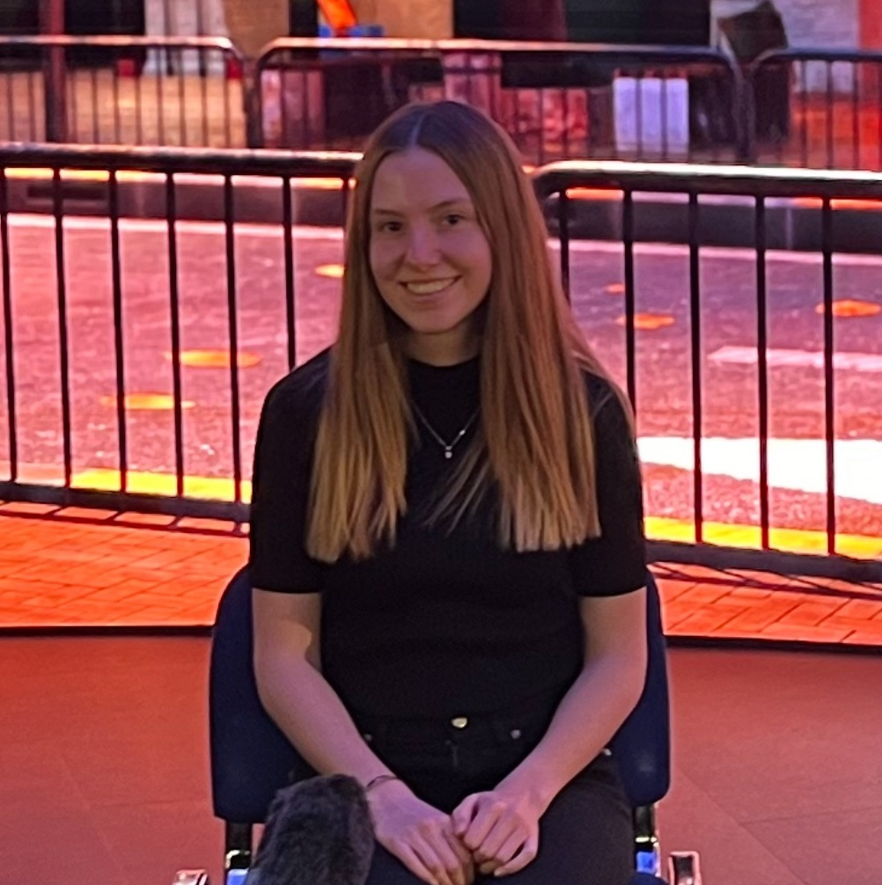
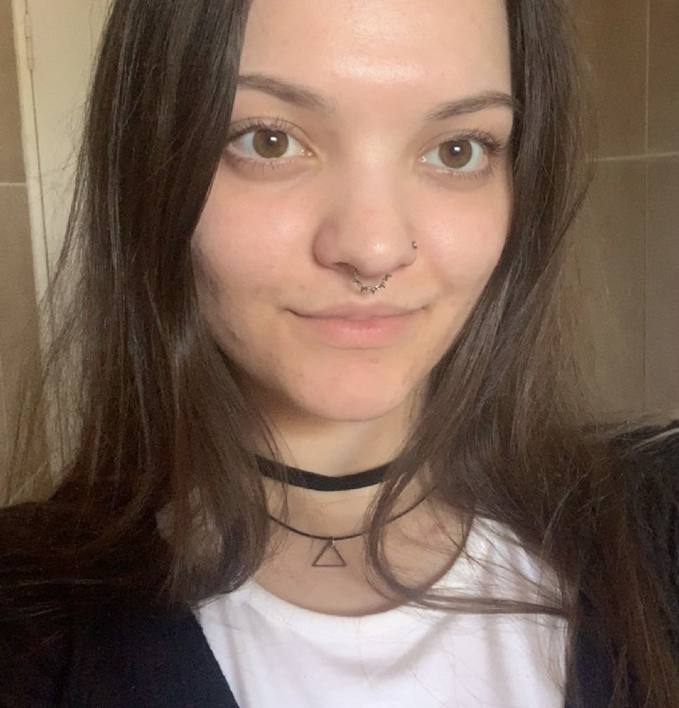

Abbygale Dunn
Director, Programmer, Designer
Role - As the founder and director of Astral Forge, Abbygale focuses on building the company and business whilst also being a programmer and designer on our games.
Why I Make Games - "When I was a child I felt most at home and like myself when I was playing video games and I want to give that experience to the world. That is what Astral Forge is about."
Favourite Game - The Witcher: Enhanced Edition



Mary-Jane Law
Programmer, Game Designer
Role - Mary-Jane is a designer and programmer for Astral Forge, she creates the games as you know it. The world and feel of the game is due to her imagination and talent.
Why I Make Games - "I'm driven by my passion for storytelling and exploring the psychology behind it. I want to make people connect with my projects on a deeper level."
Favourite Game - Darkest Dungeon II